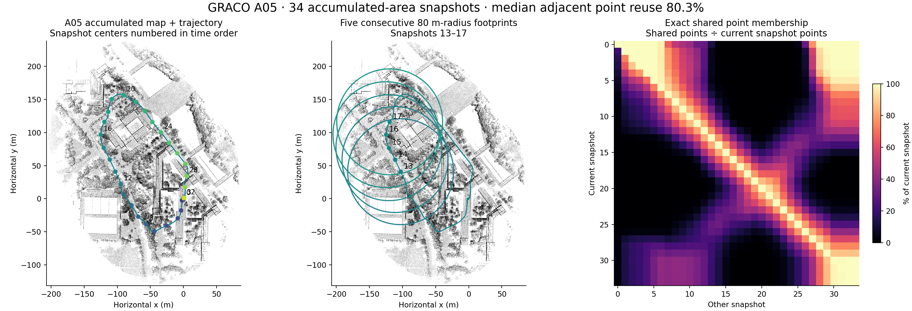
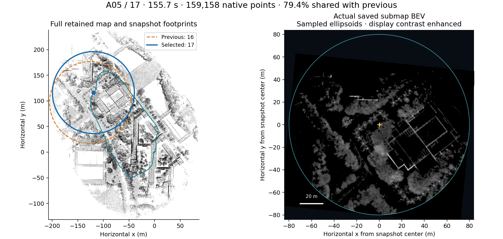
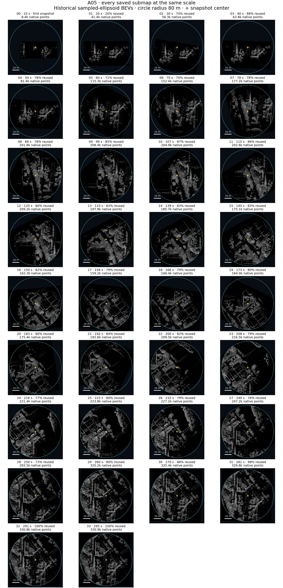

GRACO A05 · map and every submap
Accumulated-area snapshots select all stored native map points inside an 80 m horizontal radius. A new snapshot is saved after 20 m of horizontal displacement or 10 seconds, plus the shutdown tail.
34saved snapshots
median points shared with previous snapshot
mean snapshots containing each exported point
Historical capture, September 21. The overview is the saved map; the individual images are the actual saved sampled-ellipsoid BEVs, with display contrast enhanced. They are not crops of future map points and are not new point-cloud BEVs. Full 3D snapshot files remain on workstation 148, currently unreachable.


Blue: selected footprint. Orange dashed: previous footprint. Teal curve: trajectory. Yellow +: robot at snapshot. Every submap is shown at the same metric scale and heading; its saved gravity alignment is retained. Empty regions were unobserved or suppressed by the original BEV density threshold.
All 34 submaps
Select any panel to inspect it above. Percentages are exact shared stable point IDs, before registration downsampling.
Full-size contact sheet

Interpretation and limitations · Overlap table · Measurements and source hashes